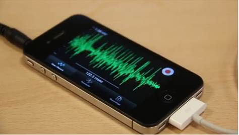
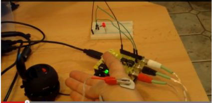
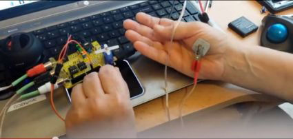
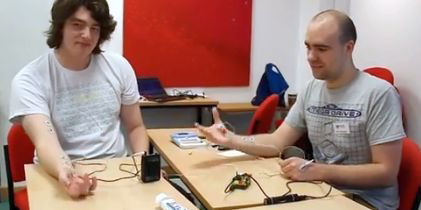
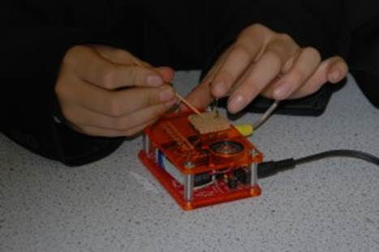
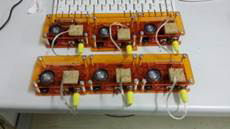
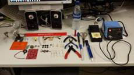
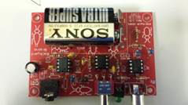
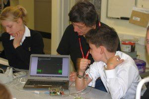

|
Indeks: |
Om die geskiedenis van ons voorsate wat honderde jare gelede gelewe het, te rekonstrueer, is dikwels 'n tydrowende, maar genotvolle taak. Sommige gegewens is maklik om in die hande te kry. Vir ander moet mens bietjie soek. Soms is daar egter gegewens wat voor ons lê, maar wat ons vir jare lank nie in verband met 'n spesifieke persoon kan bring nie en dan is daar natuurlik gegewens wat vir altyd verlore is, omdat dit nêrens aangeteken is of op so 'n plek lê waar niemand daarna sal soek nie.
Een van die tweede geslag Hennings wie se geskiedenis ons redelik volledig gerekonstrueer het, is Gert Frans Henning, gebore April 1785, sewende kind van stamvader Pieter Hendrik Henning en sy vrou Elizabeth Catharina (gebore Engelbrecht). Hy het groot geword op sy ouers se plaas, Elandskraal in die Wyk Achter de Sneeuwberg, in die Graaff-Reinet (later Cradock) distrik. Hy en sy jongste broer, Daniël Stephanus het nie soos hul ander broers die pad gevat die oomblik toe hulle groot genoeg was om self te boer nie. Hulle het op Elandskraal agtergebly en die boerdery mettertyd by hul pa oorgeneem, toe hy begin oud word. Met die dood van hulle pa in 1823 is Elandskraal dan ook tussen dié twee verdeel en het hulle afsonderlik begin boer. Die vroeë 1820's was bitter droë jare en daar was bykans geen weiding op Elandskraal meer oor vir hulle veë nie.
Ons kon uit die belastingopgawes (Opgaafrolle) en ander argivale bronne vir Graaff-Reinet en Cradock Gert Frans se geskiedenis as jong man redelik goed rekonstrueer. Lees gerus sy geskiedenis soos aangeteken by Hoofstuk 8 van die Henning Familiekroniek. Teen 1824 besluit Gert Frans ook om permanent weg te trek. Ons tel sy spoor op in die belastingopgawes vir die Wyk Brakrivier vir die jaar 1824, waar hy die plaas De Keur beset het. Hierdie plaas lê ongeveer 43 kilometers Oos-Suid-Oos van Middelburg in die Oos-Kaap. Vir baie jare kon ons nie vasstel hoe lank Gert Frans hier gewoon het nie.
Ons tel Gert Frans se spoor eers weer in 1841 op toe hy die plaas Damfontein in die Kramberge uitgelê het. Damfontein lê ongeveer 33 kilometers Suid van Aliwal-Noord. Hy en sommige van sy nasate het vir die daaropvolgende 110 jaar hier gewoon. Talle anekdotes uit hierdie tyd oor Gert Frans en sy familie het behoue gebly en is aangeteken in sy geskiedenis by Hoofstuk 8. Die meeste artefakte wat uitgestal word in die Henning uitstalling in die Kerkplein museum in Aliwal-Noord kom ook van Damfontein en Gert Frans Henning en sy nasate af.
Ons het twintig jaar gelede in Nuusbrief nr 37 van Februarie 1994 berig oor 'n brokkie nuus wat kort tevore onder ons aandag gekom het van 'n mnr Mike La Grange van Aliwal-Noord, wat 'n amateur navorser van die Boesman kultuur is. Hy het baie werk gedoen in die Barnardspruit omgewing, agter Groot Stormberg, tussen Burgersdorp en Molteno. Dit is algemeen bekend dat hierdie gebied vanaf Damfontein tot bo in Magatjan, Henning wêreld is. Daar kom baie grotte en holkranse met Boesmantekeninge voor.
Op die plaas Kraaifontein, naby Witkop, het mnr La Grange op 'n skuiling onder kranse afgekom op soek na Boesmantekeninge. Die van Henning, met heeltemal onduidelike voorletters is op die rotse uitgekrap en daaronder die duidelike datum 27 Julie 1837. Daar was ook rye strepies in groepies bymekaar om tydsverloop aan te dui. Die strepies dui ongeveer drie jaar aan.
Gedurende 1835 het die owerhede die Stormbergspruit as die Noord-Oos grens van die Kolonie verklaar. Omgewingsfaktore het die gebied oorkant die Stormbergspruit ongeskik vir menslike bewoning gemaak. In die winter was dit ysig koud (dit is bekend dat die vyf heel laagste temperature wat ooit in Suid-Afrika gemeet is, op die plaas Buffelsfontein in hierdie gebied, gemeet is. Gedurende die eerste week van Julie 2013 is die rekord op Buffelsfontein verbeter na minus 20.4º Celsius). Brandhout en water was baie skaars. Die gebied is dikwels deur uitmergelende droogtes geteister en die gebied is baie bergagtig. Selfs die swart stamme het die gebied vermy. Slegs die Boesmans (San) kon in die grotte in hierdie berge oorleef. Toe die Kaapse Goewerneur dit vir Mapassa (die groot moeilikheidmaker onder die swart stamme) aangebied het, wou nie eens hy hierdie gebied gehad het nie.
Ten spyte van al hierdie negatiewe faktore het 'n paar Trekboere gedurende die eerste drie dekades van die 19de eeu van tyd tot tyd hul vee vir rukke lank hier laat wei, voordat hulle dan weer na die Kolonie teruggekeer het. Hierdie boere het gewoonlik sommer in hul waens en wa tente gebly. In Nuusbrief nr 37 van 1994 het ons bespiegel wie die Henning kon wees wat in die holkrans geskuil het wat Mike La Grange ontdek het. Sonder stawende bewyse of duidelike leidrade wou ons natuurlik niemand uitwys nie, hoewel ons vermoed het dat dit Gert Frans kon wees.
In 2013 het een van ons lede, Pieter Emile Henning, besoek afgelê by die plaas De Keur in die Middelburg distrik. Die huidige eienaars van die plaas — Fred en Rosemarie Jordaan — kon aan hom bevestig dat die titelakte van die plaas aandui dat Gert Henning die plaas in 1837/38 sommer net laat lê en weggetrek het — skynbaar weer weens 'n groot droogte, wat reeds 'n paar jaar lank verwoesing gesaai het. Die owerhede het eers in 1838 agtergekom dat hy nie meer op die plaas woon nie. Hy kon dus reeds in 1837 getrek het. Ons het in Haantjie nr 114 van Mei 2013 berig oor Pieter Emile Henning se besoek aan hierdie plaas en die tyd toe Gert Frans en sy gesin daar gewoon het.
Nou, twintig jaar later, nadat ons sekerheid verkry het dat hy in 1837 vanaf De Keur weggetrek het, is ons oortuig dat dit Gert Frans en sy gesin was. Geen ander Henning pas by hierdie prentjie in nie. Die datum 27 Julie 1837, wat onder die kranse op Kraaifontein uitgekrap is korrespondeer met die datum wat Gert Frans skynbaar vanaf De Keur weggetrek het. As die strepies wat uitgekrap is wel op ongeveer drie jaar dui, bring dit mens by ongeveer 1840/41, toe hy Damfontein uitgelê het. Vanaf De Keur in die Brakrivier wyk na Kraaifontein en van daar af na Damfontein volg 'n logiese roete. As dit nie Gert Frans self was wat elke dag se strepie getrek het nie, was dit in alle waarskynlikheid een van sy kinders. Die waarskynlikes is b7.c2 Marthinus Christoffel *10-4-1820 (17 jaar oud), b7.c3 Elizabeth Catharina *3-10-1822 (15 jaar oud) of b7.c4 Hester Magdalena *17-4-1825 (13 jaar oud).
Gert Frans se oudste seun b7.c1 Pieter Hendrik was al getroud en het reeds 'n entjie verder op die plaas Sterkfontein , in die latere Aliwal-Noord distrik (naby die teenswoordige Jamestown) geboer.
Die ander kinders was nog te jonk om so 'n verantwoordelike taak te kon uitvoer. Hier dink ons aan b7.c5 Gert Frans *30-5-1827 (10 jaar); b7.c6 Hester Gerbregta Maria *29-8-1829 (8 jaar); b7.c7 Philippus Arnoldus *22-5-1831 (6 jaar); b7.c8 Olivier Johannes Gerhardus Cornelis *1-12-1834 (3jaar). Die ander kinders is eers na 1838 gebore. Marthinus Christoffel, as 'n seun van 17 jaar is, na ons mening, die mees waarskynlike persoon wat hierdie taak op hom kon geneem het.
Mens kan aanvaar dat 1837 tot 1841 net so koud was as deesdae en hierdie Henning gesin het onder hierdie ongenaakbare omstandighede in 'n holkrans of in hul watent oorleef.
Gedurende hierdie drie jaar het hy in alle waarskynlikheid die hele omgewing verken, totdat hy besluit het dat die ideale plek om 'n plaas uit te lê die Damfontein omgewing was. Hier kon hy 'n groot plaasdam skrop, waar hy nie maklik weer deur droogtes verdryf sou kon word nie. Die dam wat Gert Frans Henning in die 1840's op Damfontein geskrop het, word vandag nog gebruik.

Toe ons in 1980 begin het met navorsing na die geslagsregisters en geskiedenis van die Henning families van Suid-Afrika het verskeie mense vir ons foto's van hulle voorsate gestuur. Een van b7.c7.d6 Jan Jacobus Henning *2-7-1867 van die plaas Waterval, in die Aliwal-Noord distrik se nasate, het vir ons 'n foto van hulle oupa/oupagrootjie en sy vrou, Catharina Helena (gebore Potgieter) gestuur. Ons het hierdie pragtige foto sedertdien in alle publikasies oor die Henning familie gebruik.
Jan Jacobus Henning se pa b7.c7 Philippus Arnoldus Henning *22-5-1831 (sewende kind van Gert Frans Henning – lees beriggie hierbo) het die plaas Waterval, tussen Aliwal-Noord en Lady Grey uitgelê en was die eerste eienaar van hierdie plaas.
Onlangs het ons egter kontak gemaak met b7.c7.d10.e1.f3 Philippus Arnoldus (Philip) Henning *27-10-1943 van Pretoria om met hom te gesels oor sy pa, b7.c7.d10.e1 Philippus Dempsey Henning *8-9-1905 wat die eerste voorsitter van die Landboukredietraad was. Philip kon vir ons sy pa se geskiedenis bietjie invul en ook verskeie foto's van sy voorsate en sy eie familie laat kry.
Hy kon ook vir ons uitwys dat die foto wat ons van b7.c7.d6 Jan Jacobus Henning het, inderwaarheid Jan Jacobus se pa, b7.c7 Philippus Arnoldus Henning *22-3-1831 en sy vrou Petronella Christina (gebore Dempsey) is. Hy besit die oorspronlike foto weens die Dempsey konneksie.
Ons het dus die nodige regstelling in ons meester rekords gemaak en alle nuwe CD's met die Henning Familiekroniek sal voortaan die regte beskrywing vir die foto vertoon.
Philip se pa, Dr Philippus Dempsey Henning *8-9-1905 het diep spore getrap in die Staat se hantering van Landbousake. Na sy studies aan die Universiteit van Stellenbosch waar hy 'n Doktorsgraad in Landbou-wetenskappe verwerf het, was hy dosent in landbouwetenskappe aan dieselfde universiteit. Hierna het hy 'n aanstelling by die Departement van Landbou ontvang en gevorder tot die direkteur van die winterreënstreek. In 1953 is hy bevorder tot Direkteur van Grondbewaring en Voorligting by die hoofkantoor van die Departement van Landbou in Pretoria. Hierna is hy bevorder tot Hoofdirekteur-Beleid en daarna tot die eerste voorsitter van die Landboukredietraad. Hierdie pos het hy gevul tot met sy aftrede in 1970.
Ons is ook bewus dat Dr Philippus Dempsey Henning in 1957 by 'n Bondsraad van die Afrikaner Broederbond met die tema "Die Boerdery as vesting van die Afrikaner", 'n referaat gelewer het om die onmisbare rol van die Afrikaner in Landbou uit te wys.

Baie dankie weereens aan Jan Andries Henning van Leraatsfontein, Witbank, Jan Hendrik Henning van Glenstantia, Pretoria en emeritus Past Antonie Henning van Rietfontein, Pretoria wat voortgaan om met 'n maandelikse debietorder bydraes te lewer. Dìt is van onskatbare waarde vir die Familiebond. Baie dankie ook aan al die lede wat oor die afgelope drie maande vir ons hulle bydraes vir 2015 aangestuur het. Ons vermeld graag die name van diegene wat ruimskoots — R300.00 of meer — bygedra het:
GS (Gerhard) Henning en sy vrou Deirdré van Royldene, Kimberley — R500.00
Bernard Henning en sy vrou Hester van Strand, Ondervoorsitter van die Familiebond — R500.00
Frank Henning en sy vrou Anette van Barberton — R360.00
Dr PA (Philip) Henning en sy vrou, Anna van Stellenberg, Durbanville — R300.00
JSM (Jan) Henning en sy vrou Maria van Lyttelton Manor, Centurion — R300.00
Mev RT (Runa) van Straaten (gebore Henning) en haar man Simon Sauer van Straaten van Doringkloof, Centurion — R300.00
WF (Willie) Henning en sy vrou Gerda van Leeufontein, Burgersdorp — R300.00
Mev SD (Sylvia) Grobler (gebore Henning) van Randparkrif, Randburg — R300.00
Iemand het op 15 Desember 2014 naamloos 'n bedrag van R300.00 in die familiebond se rekening deponeer. So ook het een van die vele JA Hennings op 20 Desember 'n bedrag van R350.00 in ons rekening gedeponeer, sonder om sy lidnommer of ander leidraad om hom te identifiseer, te verstrek. Baie dankie ook aan hierdie twee lede.
Ons doen maar weer 'n beroep op lede om hul bydraes vir 2015 so gou as moontlik vir ons te stuur. Die besonderhede van die familiebond se bankrekening is as volg: ABSA Bank Villiersdorp (tak 334 612); Rekening naam — Henning Familiebond; Rekening nommer 2890 610 423

Dit is met leedwese dat ons verneem het van die afsterwe van die volgende Hennings: b5.c5.d7.e3.f4.g1 Cornelia Maria Henning (gebore Lombard) *26-4-1927 van Bloemfontein. Sy is oorlede op 29 Oktober 2014 te Bloemfontein in die ouderdom van 87 jaar en ses maande. Sy is die weduwee van Johannes Lodewyk Henning wat reeds in 1990 oorlede is, en die moeder van Willie (Willem Johannes) Henning van Heuwelsig, Bloemfontein. Ongelukkig kon ons nie 'n foto van Cornelia kry nie.
b6.c1.d3.e5.f2.g4.h1 Margaretha Johanna Henning (gebore Joubert) *30-4-1938 het gesterf in die Parklands hospitaal in Springs op 27 Oktober 2014. Sy was die weduwee van Barend Jacobus Henning wat reeds in 2000 oorlede is. Beide haar seuns, Barend Jacobus *1969 en Petrus Francois Joubert (Pieter) *1972 het Doktorsgrade in Meganiese Ingenieurswese.

Ons het nog verskeie aandenkings beskikbaar, wat pragtige verjaardaggeskenke sal maak, of sommer net as aandenking gekoop kan word. U kan telefonies (by 028 840 0113 of sel 082 355 3801) of per E-Pos (olie4@henning.org) bestel. Ongelukkig word posgeld volgens die gewig van die pakkie bygevoeg, dus sal ons u eers in kennis stel hoeveel die posgeld sal bedra, voordat u die geld in die Familiebond se rekening deponeer. Rekening besonderhede: ABSA Bank Villiersdorp (tak 334 612);
Rekeningnaam — Henning Familiebond; Rekeningnr — 2890 610 423
1. Teelepels — R50.00 elk. Pragtig as 'n stel van ses of meer, saam met 'n suikerlepel
2. Suikerlepels — R54.00 elk
3. Lapelwapens — R30.00 elk
4. Mansjetknope — R100.00 stel. Werklik pragtig! Kan met trots gedra of in 'n vertoonkas vertoon word
5. Skryfblokke (50 bladsye) — R30.00 elk
6. Henning CD — R125.00 elk
7. Henning Familiekroniek — twee volumes — R450.00 (slegs 6 stelle beskikbaar)
Ons wil graag meld dat ons 'n Indeks van die inhoud van al 120 Nuusbriewe vanaf 1985 tot 2014 (30 jaar), beskikbaar het. Dit beslaan 40 bladsye en kan teen R10.00 elk bestel word.

Jannetta Steyn(50) is die dogter van b7.c8.d8.e3.f1. Leonetta (Leonie) Steyn (gebore Henning). Jannetta en haar ma was van die stigterslede van die Familiebond op 21 Julie 1984 en was sedertdien nog altyd betrokke by die aktiwiteite van die familiebond, ten spyte van die feit dat sy self nooit 'n Henning was nie. Jannetta het op eie koste die Henning webwerf tot stand gebring en hou dit ook in stand. Sy is tans besig met 'n Doktorsgraad in rekenaarwetenskap by die Universiteit van
Newcastle in Engeland. Omdat ons nooit werklik kon verstaan wat sy studeer nie, het ons haar gevra om vir ons meer te vertel van haar studies en navorsing. Ons hoop regtig dat haar interessante studierigting Henning jongmense sal inspireer om ook hierdie studieveld te beproef.
My Oom Olivier, die bondsekretaris het gevra ek moet ietsie skryf omtrent wat ek doen, want dalk vind die nuusbrieflesers dit interessant. Ek dink hy wil eintlik uitvind of ek regtig besig is en of ek net vir kwaadgeld rond lê, want ek vat altyd 'n eeu om die Henningwebwerf op datum te bring!
Ek bly nou al die afgelope 17 jaar in die noorde van Engeland in 'n pragtige stad met die naam Durham. Durham het 'n katedraal wat oor die 900 jaar oud is asook 'n universiteit — een van die oudste universiteit in Engeland. So vier jaar gelede het ek besluit om op te hou werk as 'n sagteware-ingenieur by die universiteit van Newcastle en voltyds te studeer. Ek het begin met 'n Meestersgraad in Bio-informatika en daarna, aan die begin van 2011, het ek 'n doktorsgraad (PhD) by die Universiteit van Newcastle aangepak.[Opmerking deur die Redakteur: Jannetta het haar Meestersgraad met Onderskeiding verwerf!]
Die Engels vir wat ek doen is "Computational Neuroscience" of "Neuroinformatics". Ek veronderstel dat laasgenoemde met "Neuroinformatika" vertaal kan word maar wat eersgenoemde betref het ek nie die vaagste benul wat dit in Afrikaans is nie.
Wat dit nou eintlik beteken is dat ek 'n rekenaarmodel wil skep van wat senuweeselle doen. Senuweeselle is spesiaal want hulle kan elektriese boodskappe vir mekaar stuur. Dit is hoe ons breine ons liggame beheer. Die selle vorm 'n netwerk en deur met mekaar te kommunikeer kan die boodskap vanaf die brein na 'n liggaamsdeel toe gestuur word.
Soogdiere (dit sluit nou mense in) is baie kompleks en dit is hoekom wetenskaplikes dan dikwels "modelorganismes" gebruik wat eenvoudiger is maar waaruit ons baie grondbeginsels kan leer. Dus werk ek met krappe — die soort wat jy kan eet. Dis nogal nie te sleg nie want ek dissekteer die krappe maar ek hou die kloue en dan eet ek so elke nou en dan krapvleis as ek so 'n klomp bymekaar gemaak het. Op een stadium het ek selfs die karkasse gehou en toe 'n lekker krapaftreksel gemaak wat ek gebruik het vir paella en kraprisotto!
'n Gedeelte van die krap se senuweestelsel staan bekend as die stomatogastriese senuweestelsel en is om die maag gevou. In die middel van dié gedeelte van die senuweestelsel is daar 'n groepie neurone. So 'n groepie word 'n ganglion genoem en die spesifieke ganglion staan bekend as die stomatogastriese ganglion.
In die ganglion is daar sowat 25 tot 30 neurone. Die interressante ding van die neurone is dat hulle saamwerk om twee "sentrale patroongenerators" te skep. Die sentrale patroongenerators word ook in mense gevind en hulle werk saam om ritmiese patrone te skep wat ritimiese bewegings beheer in die liggaam bv. die knip van oë, loop, kou, ens. In die geval van die krap en die spesifieke neurone waarin ek belangstel, die piloriese sentrale patroongenerator, beheer die patroon twee groepe spiere wat saamwerk om n filtreermeganisme in die maag te vorm.
As ek nou 'n reeds lang storie wil kortknip, kan ek my navorsing opsom deur te sê dat ek 'n rekenaarmodel wil skep van die piloriese konstruksieneurone se aktiwiteite onder die invloed van neuromodulasie. Neuromodulators is molekules wat die aktiwiteit in neurone kan verander. Navorsing soos die help ons om meer te leer omtrent siektes soos byvoorbeeld "Parkinson's disease".
Nouja, dit klink nogal kompleks nê? Aangesien dit so moeilik is om wetenskaplike feite aan nie-wetenskaplikes te verduidelik, is universiteite altyd op die uitkyk vir maniere waarop wetenskap op 'n verstaanbare manier aan die publiek bekend te maak. Dis hoe ek toe met "Spikerboxes" te doen gekry het. Die Spikerbox is 'n versterker waarmee mens senuwee-impulse in jou spiere kan bespeur. Mens kry elektrodes wat 'n mens op jou vel plak (soos 'n pleister) en dan word die elektrode aan die versterker gekoppel met 'n draad. Die Spikerbox prop in jou selfoon in soos oorfone en dan kry mens 'n spesiale "toep" (in Engels 'n "app") wat dan soos 'n ossiloskoop die neurale aktiwiteit wys. Daar is ook 'n luidspreker in die Spikerbox waarmee 'n mens na die aktiwiteit kan luister.
|

Figuur 1: Mens kan jou selfoon gebruik soos 'n osilloskoop om na die neurale aktiwiteit te kyk.
|
Op my blog is daar ook n video waar ek een van die Spikerboxes aan 'n motortjie gekoppel het. Die plakeletrodes word oor 'n spier geplaas en as jy dan daardie spier beweeg, beweeg dit die motor. In plaas van 'n motor kan mens 'n LED ('n liggie), wat dan aan- en afskakel, aan die Spikerbox koppel.
|

Figuur 2: Die rooi liggie skakel aan elke keer as ek my duim beweeg.
|
|

Figuur 3: In plaas van die liggie het ek 'n motor aan die Spikerbox gekoppel en die motor draai elke keer as ek my duim beweeg.
|
Om dit nog meer interressant te maak kan mens die Spikerbox aan 'n stimuleerder koppel. Die stimuleerder se elektrodes word dan aan 'n tweede persoon gekoppel. As die persoon wat aan die Spikerbox gekoppel is dan sy spier beweeg dan word die ander persoon se spier gestimuleer met 'n ligte skok wat die spier laat beweeg. Sodoende kan een persoon 'n ander persoon beheer. Tydens my demonstrasies het ons ure lange pret gehad met die gedoente.
|

Figuur 4: Ben (links) en Daryl (regs) is twee eerstejaarstudente wat my help met sommige van my demonstrasies. Hier gebruik Daryl sy duim om Ben se voorarm te stimuleer om te beweeg.
|
'n Ander weergawe van die Spikerbox kan gebruik word om die neurale aktiwiteit in insekte te bespeur. Byvoorbeeld in 'n erdwurm of in 'n kakkerlak- of sprinkaanagterbeen.
|

Figuur 5: Die oranje Spikerbox word gebruik om insekte te bestudeer. Hier word 'n sprinkaanbeen gebruik.
|
|

|

|

|
|
Figuur 6 a, b en c: Die eerste klomp Spikerboxes wat ek gebou het om in my uitreikaktiwiteite te gebruik.
| ||
Gaan kyk gerus na my webwerf http://brainwaves.jannetta.com. Ek besoek skole, biblioteke, universiteite of sommer enigiemand wat wil luister, met die Spikerboxes.
|

Figuur 7: Ek besoek my kinders se skool se Wetenskapklub.
|
Enigiemand wat met Jannetta Steyn oor haar studierigting wil kommunikeer, kan gerus per E-Pos vir haar skryf by jannetta@henning.org


Ons het in die vorige Nuusbrief berig oor Lenélle Henning (16) wat as deel van die Suid-Afrikaanse junior span gedurende Oktober 2014 aan die Wêreldkampioenskappe vir Aerobiese fiksheidsport in Praag, Tjeggiese Republiek deelgeneem het. Lenélle is natuurlik die dogter van b7.c8.d8.e3.f4.g2 Leonard Henning en sy vrou Chantélle van Van Riebeechshof, Bellville. Ons het belowe dat ons in hierdie nuusbrief sal vertel hoe hulle span gevaar het. Daar moet onthou word dat hierdie nog maar 'n nuwe sportsoort in Suid-Afrika is, terwyl lande soos Rusland, VSA, Australië, en ander baie jare al daaraan deelneem en gevorderde vlakke van afrigting en professionaliteit bereik het. Lenélle se span het darem die eerste rondte oorleef, maar is ongelukkig in die tweede rondte uitgeskakel. Die ondervinding wat hulle opgedoen het, was egter van onskatbare waarde.

In Desember 2014 het baie mense die dood van oud President Nelson Mandela 'n jaar tevore herdenk. b7.c8.d8.e1.f2.g3 Alexander Henning *5-5-1964 het vir ons 'n foto van hom en Madiba gestuur. Die foto is gedurende 2001 geneem toe Xander 'n bemanningslid was op 'n vliegtuig waarmee Madiba gevlieg het.